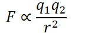
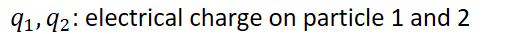

Atoms have a positively charged nucleus (protons, neutrons) surrounded by negatively charged electrons
Coulomb's Law:
Used to calculate the force between two charged particles
{width="1.7291666666666667in" height="0.5833333333333334in"}
{width="5.520833333333333in" height="0.3541666666666667in"}
{width="3.9895833333333335in" height="0.3541666666666667in"}
Force is negative: attraction
Force is positive: repulsion
Larger magnitude of forces => more attraction (directly proportional)
Larger distance (r) => less attraction (inversely proportional to square)
Application
Larger atoms (more protons) will hold onto their electrons more tightly
Takes less energy to remove electrons farther from the nucleus
Attractive force determines ionization energy (how much energy it takes to remove electrons)
Electron shielding is less important than distance between charged bodies